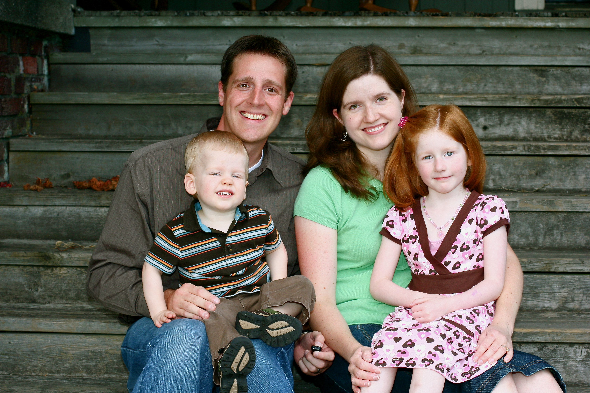

Welcome!
I firmley believe that when we document our memories we will greatly
enhance our lives. Memories can fade but as the famious quote says "A picture is a thousand words" bings back those
forgotten memories. This has been a passion of mine since I was a child. I provide landscape photo, family portraits,
graduation pictures, wildlife photos, and more. Let me know what you desire and I will get it done. Take a look around
and contact me if you are interested!
Thanks!